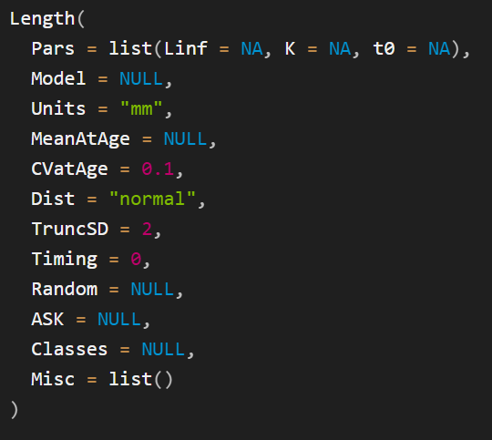
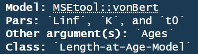

SimpleStock <- Stock("Example Stock",
CommonName = "Albacore",
Species = "Thunnus alalunga"
)4 Build a Stock Object
A Stock object contains the information related the biological characteristics of a stock, including growth and maturity schedules, natural mortality rates, stock-recruitment relationship, and other information relating to spatial distribution and movement patterns (see ?Stock for more details).
Here an example Stock object is created using an expert judgment approach, where most parameters are stochastic.
The stock is loosely based on albacore Thunnus alalunga and should only be considered an example for demonstration purposes.
Later, this Stock object will be added to the OM object created in the previous chapter.
4.1 Create a New Stock Object
The Stock() function is used to create new Stock objects:
In addition to Name, CommonName, and Species that were specified in the call to the Stock() function, Stock objects contain several other sub-objects that need to be populated:
AgesLengthWeightNaturalMortalityMaturityFecunditySRRSpatialDepletion
The sub-objects in italics are optional, see the sections below for details. The other sub-objects must be populated to complete the Stock object.
Help Documentation
Help documentation can be accessed for all openMSE objects and functions, e.g.,
?OM
?Stock
?Ages
?Length
# etc4.2 Ages
An Ages object contains information relating to the age structure of the stock.
Ages(SimpleStock) <- Ages(MaxAge = 4 * 20, Units = "quarter")Note that MaxAge is set in time units of quarter. It is important that the time units in the Ages object matches the number of seasons in the OM.
Also note that, following the convention in Years(OM) the age classes are always in units of year:
Classes(SimpleStock) [1] 0.00 0.25 0.50 0.75 1.00 1.25 1.50 1.75 2.00 2.25 2.50 2.75
[13] 3.00 3.25 3.50 3.75 4.00 4.25 4.50 4.75 5.00 5.25 5.50 5.75
[25] 6.00 6.25 6.50 6.75 7.00 7.25 7.50 7.75 8.00 8.25 8.50 8.75
[37] 9.00 9.25 9.50 9.75 10.00 10.25 10.50 10.75 11.00 11.25 11.50 11.75
[49] 12.00 12.25 12.50 12.75 13.00 13.25 13.50 13.75 14.00 14.25 14.50 14.75
[61] 15.00 15.25 15.50 15.75 16.00 16.25 16.50 16.75 17.00 17.25 17.50 17.75
[73] 18.00 18.25 18.50 18.75 19.00 19.25 19.50 19.75 20.00To keep things simple, we’ll change our OM back to annual time-steps and re-recreate the Ages object accordingly:
Seasons(SimpleOM) <- 1 # annual
Ages(SimpleStock) <- Ages(MaxAge = 20)
Classes(SimpleStock) [1] 0 1 2 3 4 5 6 7 8 9 10 11 12 13 14 15 16 17 18 19 204.3 Length
Important
Many sub-objects in the Stock object are structured and populated in a similar manner to Length objects.
This section describes populating Length objects in detail. The other sub-objects with a similar structure are described in less detail.
Readers should refer back to this section for the specific details for the different ways to populate those objects.
The Length object describes the mean length-at-age schedule and how length-at-age is distributed around the mean. This information is primarily used for two purposes:
- Calculating mean weight-at-age from a length-weight relationship a the mean length-at-age
- Calculating the age-length key for converting at-age values (such as maturity-at-age) to at-length (i.e., maturity-at-length) and vice versa, and for generating catch-at-length data.
Note
The Length object is optional if no other objects are a function of length (e.g., Weight, Maturity, Fecundity and Selectivity etc in the Fleet object, and there is no requirement to generate catch-at-length data.
The Length() function is used to create Length objects.
The help documentation for this function (?Length) provides details on the contents of the Length object and a description of the arguments for the Length() function (Figure 4.1).
Users must provide information to populate MeanAtAge and CVatAge in a Length object.
MeanAtAge is common to all objects that contain at-age information, and, as the name suggests, contains information describing the mean at-age schedule (in this case the mean length-at-age).
CVatAge contains the coefficient of variability for the distribution of length-at-age, which can be either normally (Dist='normal') or log-normally (Dist='lognormal') distributed around MeanAtAge.
Ultimately both MeanAtAge and CVatAge will be internally 3-dimensional arrays with dimensions containing values for each simulation, age-class, and historical and projection time step (typically years but as noted above, for seasonal models the time steps will actually be decimal years). However, the openMSE objects have been designed such that users only need to enter the minimal information to populate the model.
The methodology to populate age- and time-dynamic values is similar for all objects that contain MeanAtAge (and CVatAge where applicable). The next section describes this process in detail for Length objects.

Length function
4.4 Methods for Populating Age- and Time-Dynamic Values
4.4.1 Populating CVatAge
Figure 4.1 shows the that default value for CVatAge is a single numeric value 0.1. This value will be converted internally to an array with the correct dimensions, with a CV of 0.1 for all simulations, ages, and time steps.
There are several ways to include uncertainty in the values for CVatAge , and have it vary by simulation, age, and/or time step. These approaches are described in the sub-sections below. In general, all age- and time-dynamic values can be populated in the same manner.
4.4.1.1 Stochastic Samples from Distributions
The easiest way to include uncertainty is to sample from a uniform distribution. To do this, enter to numeric values representing the lower and upper bounds of a uniform distribution:
Length_CV_uniform <- Length(CVatAge = c(0.1, 0.2))The above code creates a new Length class object with only the CVatAge slot populated.
This object is processed internally to sample from a uniform distribution with these bounds and produce an array with the correct dimensions.
This is done internally by the Populate function, which is run here on the Length_CV_uniform object to demonstrate:
Length_CV_uniform <- Populate(Length_CV_uniform,
Ages = Ages(SimpleStock),
Years = Years(SimpleStock),
nSim = nSim(SimpleOM),
seed = 101
)In practice, users will rarely need to call the Populate function as this processing is done internally in the Simulate function.
CVatAge in Length_CV_uniform is now a 3-dimensional array:
Length_CV_uniform |>
CVatAge() |>
dim()[1] 5 1 1with the value for each simulation drawn from a uniform distribution with the specified bounds:
Length_CV_uniform |>
CVatAge(), , 1
[,1]
[1,] 0.1372198
[2,] 0.1043825
[3,] 0.1709684
[4,] 0.1657690
[5,] 0.1249856Once an object has been populated by Populate , all dimensions will be named:
Length_CV_uniform |>
CVatAge() |>
dimnames()NULLNotice that while CVatAge is a 3-dimensional array, the dimensions Age and Year are only length 1 and named as the first age-class and year respectively. This is because CVatAge in this example only varies by simulation and is constant for all ages-classes and years. Internally, the array will be expanded out for all age-classes and years.
The values for CVatAge can also be entered as a vector of length nSim (provided nSim > 2 ). The following are will result in the same output as the code above:
This approach can be also used to sample values from different distributions, for example:
# Sample from log-normal distribution
set.seed(101)
CVatAge <- trlnorm(nSim(SimpleOM), 0.15, 0.2)
Length_CV_lognorm <- Length(CVatAge = CVatAge) |>
Populate(
Ages = Ages(SimpleStock),
Years = Years(SimpleStock),
nSim = nSim(SimpleOM)
)
Length_CV_lognorm |>
CVatAge()4.4.1.2 Age-Specific Values
Age-specific values can be generated by specifying CVatAge as an array with dimensions nSim and nAge :
set.seed(101)
CVatAge <- array(
runif(
nSim(SimpleOM) *
nAge(SimpleStock),
0.1, 0.2
),
dim = c(
nSim(SimpleOM),
nAge(SimpleStock)
)
)
Length_CV_uniform_Age <- Length(CVatAge = CVatAge) |>
Populate(
Ages = Ages(SimpleStock),
Years = Years(SimpleStock),
nSim = nSim(SimpleOM)
)
Length_CV_uniform_Age |>
CVatAge() |>
dimnames()NULL4.4.1.3 Time- and Age-Specific Values
The same approach can be used to generate values that vary of both age and time:
set.seed(101)
CVatAge <- array(
runif(
nSim(SimpleOM) *
nAge(SimpleStock) *
length(Years(SimpleOM)),
0.1, 0.2
),
dim = c(
nSim(SimpleOM),
nAge(SimpleStock),
length(Years(SimpleOM))
)
)
Length_CV_uniform_Age_Time <- Length(CVatAge = CVatAge) |>
Populate(
Ages = Ages(SimpleStock),
Years = Years(SimpleStock),
nSim = nSim(SimpleOM)
)
Length_CV_uniform_Age_Time |>
CVatAge() |>
dimnames()NULL
4.4.2 Populating MeanAtAge
The previous section described the different methods to populate CVatAge. Additional methods are used to populate MeanAtAge.
The methods described in this section are used to populate MeanAtAge for the Length object. The same process is used for all objects that contain MeanAtAge information (e.g., ?Weight, ?Maturity, ?Selectivitity, etc).
4.4.2.1 Using Pars and Model
The first two arguments to the Length() function are Pars and Model (Figure 4.1).
These values are used to generate the MeanAtAge schedule from a growth model and corresponding parameter values.
Alternatively, as described in the next section, MeanAtAge can be populated directly in a similar manner as described above for CVatAge.
Pars is a named list, with the names of the parameters for (in this case) the growth model specified in Model.
openMSE includes built-in models for all objects that contain MeanAtAge information. Currently there is one built-in length-at-age model, the von Bertalanffy growth function (see also ?vonBert:
\[ L_a = L_\infty(1-\exp(-K(a-t_0)) \tag{4.1}\]
In general, a list of built-in models for a specific object class can be printed to the console with [CLASS]Models(). For example LengthModels() prints the built-in models corresponding to Length objects (Figure 4.2).

LengthModels()
If the names in Pars corresponds with a built-in model, Model will be set automatically and does not need to be defined.
Alternatively, Model can be a R function that takes an Ages object as the first argument followed by the additional parameters that describe the mean length-at-age relationship.
The output from LengthModels() shows that the vonBert function has three parameters: Linf, K, t0 (Figure 4.2). Values for these parameters must be entered in Pars in order to use this growth function.
The structure for the values contained in Pars is similar to that described for CVatLength above, where the values can be constant over all simulations and years, or vary by simulation and/or year.
4.4.2.1.1 Constant Values over Simulations and Years
Length_Constant <- Length(Pars = list(
Linf = 121,
K = 0.16,
t0 = -1.86
)) |>
Populate(
Ages = Ages(SimpleStock),
Years = Years(SimpleStock),
nSim = nSim(SimpleOM)
)
Length_Constant |> Pars()
Length_Constant |> MeanAtAge()
4.4.2.1.2 Linf varies over Simulations, all Pars Constant over Years
4.4.2.1.3 Time-Varying Parameters
Specifying time-varying parameters is a little more involved.
UPTO HERE - break the code out into sections
set.seed(101)
# Historical Years
Years(SimpleStock, 'H') [1] 2006 2007 2008 2009 2010 2011 2012 2013 2014 2015 2016 2017 2018 2019 2020
[16] 2021 2022 2023 2024 2025# Stochastic Linf values for all simulations for 2006 - 2018
Linf_06_18 <- runif(nSim(SimpleOM), 121, 135)
# Linf doubles from 2019 on
Linf_19_on <- Linf_06_18 * 2
# Create an array with named dimensions:
# Dimensions must be named `Sim` and `Year`
Linf <- array(c(Linf_06_18, Linf_19_on),
dim = c(nSim(SimpleOM), 2),
dimnames = list(
Sim = 1:nSim(SimpleOM),
Year = c(2006, 2019)
)
)
Length_Sim_Year <- Length(Pars = list(
Linf = Linf,
K = 0.16,
t0 = -1.86
)) |>
Populate(
Ages = Ages(SimpleStock),
Years = Years(SimpleStock),
nSim = nSim(SimpleOM)
)
Length_Sim_Year |> Pars()$Linf
Year
Sim 2006 2019
1 126.2108 252.4216
2 121.6135 243.2271
3 130.9356 261.8712
4 130.2077 260.4153
5 124.4980 248.9960
$K
Year
Sim 2006
1 0.16
$t0
Year
Sim 2006
1 -1.86Length_Sim_Year |> MeanAtAge() , , Year = 2006
Age
Sim 0 1 2 3 4 5 6 7
1 32.48687 46.34453 58.15325 68.21598 76.79087 84.09791 90.32456 95.63056
2 31.30353 44.65643 56.03502 65.73121 73.99376 81.03464 87.03448 92.14721
3 33.70304 48.07947 60.33026 70.76970 79.66560 87.24618 93.70593 99.21056
4 33.51567 47.81218 59.99487 70.37627 79.22271 86.76115 93.18499 98.65902
5 32.04599 45.71559 57.36406 67.29022 75.74875 82.95662 89.09877 94.33276
Age
Sim 8 9 10 11 12 13 14 15
1 100.15203 104.0050 107.2882 110.0861 112.4702 114.5018 116.2331 117.7083
2 96.50399 100.2166 103.3803 106.0762 108.3735 110.3311 111.9993 113.4208
3 103.90130 107.8985 111.3047 114.2072 116.6806 118.7883 120.5843 122.1148
4 103.32368 107.2986 110.6859 113.5723 116.0319 118.1279 119.9140 121.4360
5 98.79288 102.5935 105.8322 108.5921 110.9439 112.9479 114.6557 116.1109
Age
Sim 16 17 18 19 20
1 118.9655 120.0367 120.9496 121.7275 122.3904
2 114.6322 115.6644 116.5440 117.2936 117.9323
3 123.4190 124.5304 125.4775 126.2845 126.9722
4 122.7329 123.8381 124.7799 125.5824 126.2663
5 117.3510 118.4077 119.3082 120.0755 120.7294
, , Year = 2019
Age
Sim 0 1 2 3 4 5 6 7
1 64.97373 92.68906 116.3065 136.4320 153.5817 168.1958 180.6491 191.2611
2 62.60706 89.31286 112.0700 131.4624 147.9875 162.0693 174.0690 184.2944
3 67.40607 96.15894 120.6605 141.5394 159.3312 174.4924 187.4119 198.4211
4 67.03134 95.62437 119.9897 140.7525 158.4454 173.5223 186.3700 197.3180
5 64.09198 91.43118 114.7281 134.5804 151.4975 165.9132 178.1975 188.6655
Age
Sim 8 9 10 11 12 13 14 15
1 200.3041 208.0100 214.5765 220.1721 224.9404 229.0037 232.4661 235.4167
2 193.0080 200.4332 206.7605 212.1523 216.7469 220.6622 223.9986 226.8416
3 207.8026 215.7970 222.6093 228.4144 233.3612 237.5766 241.1687 244.2297
4 206.6474 214.5973 221.3718 227.1446 232.0639 236.2558 239.8280 242.8719
5 197.5858 205.1871 211.6645 217.1842 221.8877 225.8959 229.3114 232.2218
Age
Sim 16 17 18 19 20
1 237.9309 240.0735 241.8992 243.4550 244.7808
2 229.2643 231.3288 233.0880 234.5872 235.8646
3 246.8381 249.0608 250.9549 252.5689 253.9443
4 245.4658 247.6762 249.5598 251.1648 252.5326
5 234.7020 236.8155 238.6164 240.1511 241.4589
4.4.2.2 Populating MeanAtAge Directly
Here the process to create and populate a Length object is broken into several steps. In practice this can be done in one or two lines of code.
Create a new Length object:
The mean length-at-age schedule is stored in a slot named MeanAtAge, which can be specified in two ways:
- A growth model and a list of the respective parameter values
- Directly as an array specifying the mean length-at-age for each simulation and year.
4.4.2.3 Model and Parameters
The Model and Pars slots are used to generate the mean length-at-age.
Model specifies the growth function, and Pars is a named list with the parameter values.
# DefaultLength <- Length()
#
# Populate(DefaultLength)
#
# ?Populate
#
# Length(SimpleStock) <- Length()
#
# Populate(Length(SimpleStock))
#
# Pars=list(Linf=c(121, 135),
# K=c(0.16, 0.22),
# t0=c(-1.86, -1.41))Model can either be a character string specifying the name of the growth model corresponding with the named parameters in Pars, or
4.5 Create Length Object to SimpleStock
The above sections described various ways to populate a Length object.
Here a Length object is created with stochastic values for the growth parameters (Pars) and CVatLength that vary over simulations, and the object is added to the SimpleStock object: